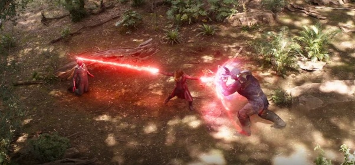

As her powers likely come at least in part from the Mind Stone inside of Loki’s scepter, Wanda’s abilities include telekinesis, energy manipulation, and some form of neuroelectric interfacing that allows her to both read thoughts and also give her targets waking nightmares. Under the tutelage of Avengers Captain America and Black Widow, she has learned not only to hone her abilities further, but also hand-to-hand combat and tactical skills.
when she saw horrific vehicles begin to decimate her friends and the Wakandans that fought with them, Wanda leapt into action and used her powers to turn the devices against Thanos’ army. While Proxima Midnight briefly knocked her out, Wanda awakened in time to help Black Widow and Okoye, killing Proxima Midnight.
